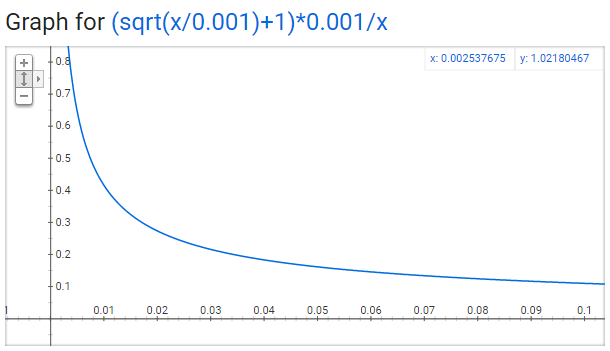

Word2Vec

最近剛好看到一篇關於 Skip-gram word2vec的介紹，內文寫的淺顯易懂，衍生的閱讀也十分詳細，決定動手寫篇記錄下來。
人對於文字的理解，可以很簡單的就能了解字面的意義，但是對於機器來說，要如何理解文字是一個很困難的問題。 要如何讓機器來理解文字的意義？ 透過將文字轉換成向量，來讓機器能夠讀的懂，所以其實文字對於機器來說只是數字，而我們在做的就只是數字的遊戲。
Word embeddings
在將字詞轉換成向量的實作中，大家常用的方法肯定是 one-hot-encoding，但是 one-hot-encoding 在計算上卻是非常沒有效率的方式，如果一篇文章中總共有50,000的單詞，用 one-hot-encoding 來表示某個單詞的話，將會變成1與49999個0的向量表示。就如同下圖表示，如果要做 matrix multiplication 的話，那將會浪費許多的計算資源。

透過 Word Embedding1 可以有效的解決上述的問題。 Embedding 可以想成與 full connected layer 一樣，將這個 layer 稱做為 embedding layer ， weight 則稱為 embedding weights。藉由這樣的概念，可以省略掉 multiplication 的過程，直接透過 hidden layer 的 weigth matrix 來當作輸入字詞的 word vector。之所以可以這樣來執行是因為在處理 one-hot-encoding 與 weight matrix 相乘的結果，其實就是 matrix 所對應"詞"的索引值所得到的結果。

舉例來說： "heart" 的在 one-hot-encoding 的索引位置為958，我們直接拿取 heart 所對應 hidden layer 的值，也就是 embedding weights 的第958列(row)，這樣的過程叫做 embedding lookup，而 hidden layer 的神經元數量則為 embedding dimension。

另一個解釋是在於 word2vec 是一個三層架構，分別是 input layer、hidden layer、output layer，但是在 hidden layer 並沒有非線性的 activation function，由於 input layer 是經由 one-hot-encoding 過的資訊，所以在 hidden layer 所取得的值，其實就是對應輸入層得值；另外一提 output layer 的 activation function 是 sigmoid。

原文中最後提到的三個主要重點：
- The embedding lookup table is just a weight matrix.
- The embedding layer is just a hidden layer.
- The lookup is just a shortcut for the matrix multiplication.
Models
介紹完 word embedding 後，要來介紹 word2vec algorithm 中的兩個 model：
- Skip-gram
- CBOW(Continous Bag-Of-Words)

Skip-gram model
用下列兩張圖來解釋 skip-gram model 的結構，假設model是一個simple logistic regression(softmax)，左邊的圖表示為概念上的架構(conceptual architecture)，右邊的圖則為實作上的架構(implemented architectures)，雖然圖的架構有些微不同，但是實際上是一樣的，並沒有任何的改變。 首先定義參數：
- V - Vocabulary Size (Number of unique words in the corpora)
- P - The Projection or the Embedding Layer
- D - Dimensionality of the Embedding Space
- b - Size of a single Batch
由左圖可以了解到，Skip-gram model 的 input(X) 為一個單詞，而你的目標，也就是你的 output(Y) 為相鄰的單詞。換句話就是在一句話中，選定句子當中的任意詞作為 input word，而與 input word 相鄰的字詞則為 model 的所要預測的目標(labels)，最後會得到相鄰字詞與 input word 相對應的機率。
但是上述的想法會出現一個問題，就是你只提供一個字詞的訊息，然而要得到相鄰字詞出現的機率，這是很困難的一件事，效果也不佳。所以這邊提出兩個方法:
- 針對"相鄰字詞"這部分，加入了 window size 的參數做調整
- 將輸出所有字詞的方式轉成一對一成對的方式
舉例來說："The dog barked at the mailman." 這樣一句話，選定 dog 做為 input，設定window size = 2，則 "dag" 下上兩個相鄰字詞為 ['the', 'barked', 'at'] 就會是我們的 output。此外將原本的(input: 'dag', output: '['the', 'barked', 'at']) 轉換成 (input: 'dag', output: 'the'), (input: 'dag', output: 'barked'), (input: 'dag', output: 'at') 這樣一對一的方式。這樣的過程就如同右圖 implemented architectures。
下圖解釋一個語句的training samples產生:

所以當training samples: (brown, fox)的數量越多時，輸入brown得到fox的機率越高。
Model Details
Input layer: 字詞經過 one-hot-encoding 的向量表示。 hidden layer: no activation function，上述介紹 embedding layer 已經解釋過。 output layer: use softmax regression classifier，output 的結果介於0與1之間，且加總所有的值和為1。

假設輸入的 word pair 為(ants, able)，則模型的目標是 \(max P\left(able | ants \right)\)，同時也需要滿足 \(min P\left(other \space words | ants \right)\)，這裡利用 log-likehood function 作為目標函數。
\[ P\left(able | ants \right) = softmax\left( X_{ants 1\times 10000} \cdot W_{10000 \times 300}\right) \]
\[ Y = sotfmax(Y) =\frac{exp(X_{1 \times 300} \cdot W_{300 \times 1})}{\sum_{i=1}^{10000} exp(X_{1 \times 300}^i \cdot W_{300 \times 1})} \]
log-likehood function:
\[ L(W) = P\left(able \mid ants \right)^{y=able} \times P\left(other \space words | ants \right)^{y=other \space words} \]
Objective function可以表示如下：
\[ \begin{align} LogL\left(W\right) & = \{y = target \space word\} \{logP\left(able | ants \right) + logP\left(other \space words | ants \right)\}\\ & = \sum_{i}^{10000}\{ y = target \space word\}logP\left( word_{i} | ants \right) \end{align} \]
之後就是 Maxmium log-likehood function。 由上述的介紹，會發現一個問題，這是一個非常巨大的 NN model。假設 word vectors 為300維的向量，具有10,000個字詞時，總共會有 \(300 \times10000 = 3\) 百萬的 weight 需要訓練!! 這樣的計算 gradient descent 時造成模型的訓練時間會非常的久。
對於這問題，Word2Vec 的作者在paper第二部分有提出以下的解決方法:
- Treating common word pairs or phrases as single words in their model.
- Subsampling frequent words to decrease the number of training examples.
- Modifying the optimization objective with a technique they called Negative Sampling, which causes each training sample to update only a small percentage of the model’s weights
- A computationally efficient approximation of the full softmax is the hierarchical softmax.
Subsampling 與 Negative Sampling 這兩個實作方法不只加速了模型的訓練速度，同時也提升模型的準確率。
- Words pairs and phrases
比如說 New York City 在字詞訓練時，會拆成 New、York、City 三個字詞，但是這樣分開來無法表達出原意，所以將"New York City"組合為一個單詞做訓練。
- Subsampling frequent words
在剛剛透過下圖解釋了相關的原理，但是這會發現兩個問題，一是像是出現(the, fox)這樣的 pair，並沒有告訴我們有用的資訊，並且"the"是常出現的字詞；二是有大量像是"the"這類的字詞出現在文章，要如何有意義地學習"the"字詞表示的意思。
subsamplig 針對這樣的狀況，透過一個機率值來判斷詞是否應該保留。機率值計算公式如下: \( P\left( w_{i} \right) = \left( \sqrt{\frac{Z(w_{i})}{0.001} + 1} \right) \cdot \frac{0.001}{Z(w_{i})} \) 其中$P\left( w_{i} \right)$表示$w_{i}$的出現機率，0.001為默認值。具體結果如下圖，字詞出現的頻率越高，相對被採用的機率越低。 
- Negative Sampling
此方法目的是希望只透過正確的目標字詞來小改動 weight。比如說，ward pair (fox, qiuck)，在這個例子中"qiuck"為目標字詞，所以標記為1，而其他與 fox 無相關的字詞標記為0，就稱之為 negative sampling，這樣的 output 就有像是 one-hot vector，只有正確的目標字詞為1(positive word)，其他為0(negative word)。 至於 Negative sampling size 需要多少，底下是Word2Vec的作者給出的建議:
The paper says that selecting 5-20 words works well for smaller datasets, and you can get away with only 2-5 words for large datasets.
所以假設是以上面描述的狀況，qiuck 則為 postive word，另外加上5個 negative word，output 值為6個值，總共有 \(300 \times 6 = 1800\) 個 weight 需要更新，這樣只佔了原本300萬的 weight 0.06%而已!
該如何挑選 negative sampling? 則是透過 unigram distribution 的機率來挑選， 在C語言實作 word2vec 的程式碼中得到以下公式
\[ P\left( w_{i} \right) = \frac{f\left( w_{i} \right)^{\frac{3}{4}} }{\sum_{j=0}^{n} \left( f\left( w_{j}\right)^{\frac{3}{4}} \right)} \]
$\frac{3}{4}$次方的選擇是來至於實驗測試的結果。
Define Objective function:
\( log \space \sigma \left( v_{I}^{T} \cdot v_{o} \right) - \sum_{i=1}^{k} E_{w_{i} -> P_{v}}[\sigma\left( -v_{w_{i}}^{T}v_{wI} \right)] \) $ Note \space \sigma(-x) = 1 - \sigma(x)$
Reference
- An implementation skip-gram of word2vec from Thushan Ganegedara
- An implementation CBOW of word2vec from Thushan Ganegedara
- Word2Vec Tutorial Part1 and Part2 from Chris McCormick
- Deep understand with word2vec form Mark Chang's Blog (Chinese)
- Efficient Estimation of Word Representations in Vector Space
- Distributed Representations of Words and Phrases and their Compositionality
Plus reference
- word embedding: 將單詞word映射到另一個空間，其中這個映射具有injective和structure-preserving的特性。 ^